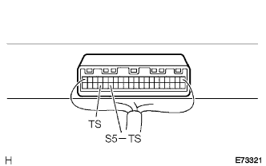
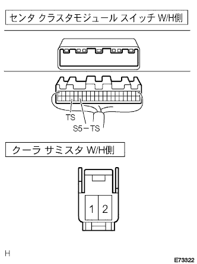

DTC REC 日射センサ回路 |
| 表示コード | 診断内容
| 点検部位 |
|---|---|---|
| REC |
|
|
| 手順1 | センタ クラスタ モジュール スイッチ単体点検（ＴＳ） |
|  |
IGスイッチをONにする。
SST(トヨタエレクトリカルテスター)を使用して、センタクラスタモジュールスイッチのコネクタA35(S5-TS)端子←→A37(TS)端子間の電圧を測定する。
| 日射 | 基準値 |
|---|---|
| あり | 0.8－4.3V |
| なし | 0.8V以下 |
|
| ||||
| NG | |
| 手順2 | クーラ サーミスタ (ニッシャセンサ)単体点検 |
日射センサ抵抗値測定
 |
SST(トヨタエレクトリカルテスター)を使用して、コネクタ1端子にテスターのマイナス、2端子にテスターのプラスを接続し、センサに布をかけて直接光を照らさない状態と、点検灯の光を30㎝以内に接近させたときのコネクタ端子間の抵抗値を測定し、判定する。
| 測定条件 | 基準値 |
|---|---|
| 直射日光を照らさない状態(センサを布で覆う) | ∞Ω(導通なし) |
| 点検灯の光を接近させたとき | ∞Ω以外 |
|
| ||||
| OK | |
| 手順3 | ワイヤハーネスまたはコネクター点検（クーラサーミスタ-センタクラスタモジュールスイッチ） |
点検前準備
クーラサーミスタ(ニッシャセンサ)およびセンタクラスタモジュールスイッチのコネクタを切り離す。
|  |
SSTを使用して、クーラサーミスタ(ニッシャセンサ)のワイヤハーネス側コネクタ端子間を短絡する。
導通点検
SST(トヨタエレクトリカルテスター)を使用して、センタクラスタモジュールスイッチのワイヤハーネス側コネクタのA35(S5-TS)端子←→A37(TS)端子間の導通を点検する。
短絡点検
SST(トヨタエレクトリカルテスター)を使用して、センタクラスタモジュールスイッチのワイヤハーネス側コネクタA35(S5-TS)端子およびA37(TS)端子←→ボデーアース間の短絡を点検する。
|
| ||||
| OK | |
| 手順4 | ダイアグコード読み取り |
センサチェックコードを消去する。
IGスイッチをONにして、8.5分以上経過後にダイアグコードを読み取る。
|
| ||||
| NG | ||
| ||